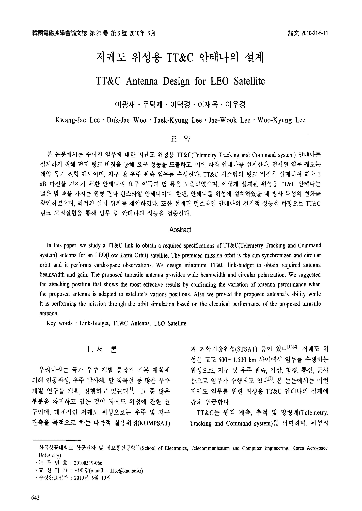

연구실적 · 국내전문학술지
저궤도 위성용 TT&C 안테나의 설계
TT&C Antenna Design for LEO Satellite
 DOI
DOI PDF
PDF
초록
본 논문에서는 주어진 임무에 대한 저궤도 위성용 TT&C(Telemetry Tracking and Command system) 안테나를 설계하기 위해 먼저 링크 버짓을 통해 요구 성능을 도출하고, 이에 따라 안테나를 설계한다. 전제된 임무 궤도는 태양 동기 원형 궤도이며, 지구 및 우주 관측 임무를 수행한다. TT&C 시스템의 링크 버짓을 설계하여 최소 3dB 마진을 가지기 위한 안테나의 요구 이득과 빔 폭을 도출하였으며, 이렇게 설계된 위성용 TT&C 안테나는 넓은 빔 폭을 가지는 원형 편파 턴스타일 안테나이다. 한편, 안테나를 위성에 설치하였을 때 방사 특성의 변화를 확인하였으며, 최적의 설치 위치를 제안하였다. 또한 설계된 턴스타일 안테나의 전기적 성능을 바탕으로 TT&C링크 모의실험을 통해 임무 중 안테나의 성능을 검증한다.
In this paper, we study a TT&C link to obtain a required specifications of TT&C(Telemetry Tracking and Command system) antenna for an LEO(Low Earth Orbit) satellite. The premised mission orbit is the sun-synchronized and circular orbit and it performs earth-space observations. We design minimum TT&C link-budget to obtain required antenna beamwidth and gain. The proposed turnstile antenna provides wide beamwidth and circular polarization. We suggested the attaching position that shows the most effective results by confirming the variation of antenna performance when the proposed antenna is adapted to satellite's various positions. Also we proved the proposed antenna's ability while it is performing the mission through the orbit simulation based on the electrical performance of the proposed turnstile antenna.
사이트 원문 표기
Kwang-Jae Lee (이광재), Duk-Jae Woo (우덕제), Taek-Kyung Lee (이택경), Jae-Wook Lee (이재욱), Woo-Kyung Lee (이우경), “저궤도 위성용 TT&C 안테나의 설계”, 한국전자파학회논문지, 제21권 6호, 2010년
BibTeX
@article{Lee_2010,
title={TT&C Antenna Design for LEO Satellite},
volume={21},
ISSN={1226-3133},
url={http://dx.doi.org/10.5515/kjkiees.2010.21.6.642},
DOI={10.5515/kjkiees.2010.21.6.642},
number={6},
journal={The Journal of Korean Institute of Electromagnetic Engineering and Science},
publisher={Korean Institute of Electromagnetic Engineering and Science},
author={Lee, Kwang-Jae and Woo, Duk-Jae and Lee, Taek-Kyung and Lee, Jae-Wook and Lee, Woo-Kyung},
year={2010},
month=June,
pages={642–650}
}